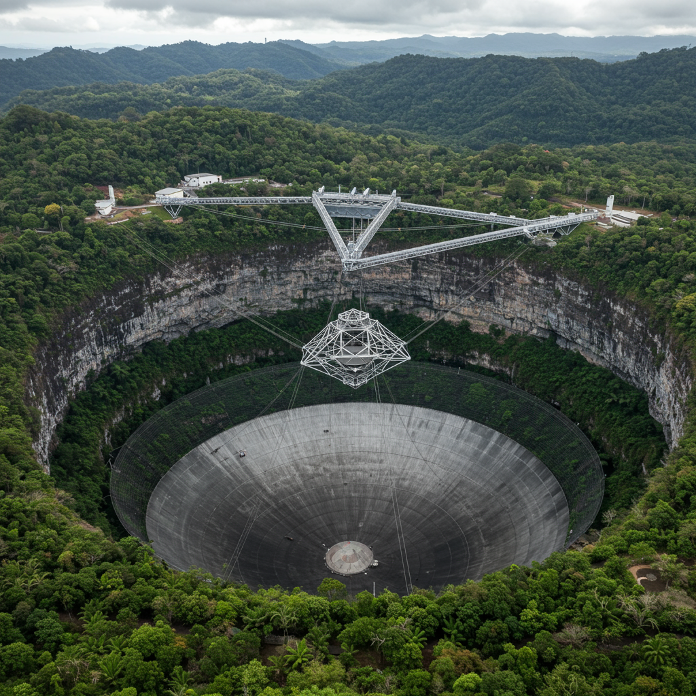

Arecibo Observatory
Ubicación: Puerto Rico, EE.UU.
Fecha de inauguración: 1963
Tipo de instalación: Radiotelescopio de plato único fijo de 305 m
Objetivo
Estudio de señales de radio provenientes del espacio, radar planetario, análisis de la ionosfera y búsqueda de señales extraterrestres (SETI).
Principales descubrimientos
- Descubrimiento del primer púlsar binario (PSR B1913+16), crucial para confirmar la existencia de ondas gravitacionales.
- Mediciones detalladas de rotación planetaria (Mercurio y Venus).
- Cartografía de asteroides y cometas con radar.
- Envío del famoso "Mensaje de Arecibo" en 1974, destinado al cúmulo de Hércules como saludo interestelar.
Aportación histórica
Por más de 50 años fue uno de los radiotelescopios más poderosos del mundo. Su papel fue clave en la astronomía, la ciencia planetaria y la comunicación con el público. Fue un ícono cultural, apareciendo en películas como "Contact" y "GoldenEye", inspirando generaciones de científicos.
Significado del nombre
El observatorio toma su nombre del municipio de Arecibo en Puerto Rico, donde está ubicado. El nombre tiene origen indígena taíno y significa "río grande" o "agua grande".
Estado actual
En diciembre de 2020, su icónica antena colapsó tras fallos estructurales. La instalación fue desmantelada por razones de seguridad. Sin embargo, el centro de ciencia y educación en el sitio sigue activo para la divulgación.